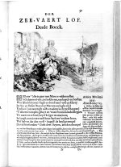

Elias Herckmans, Der zee-vaert lof, handelende vande gedenckwaerdighste zeevaerden [...] in VI boecken beschreven. Amsterdam, bij Jacob Pietersz. Wachter, 1634. -- (1499 A 27)
Dat Elias Herckmans’ boek vol rijmelarij over de zeevaart bij bibliofielen zeer in trek is, is niet de verdienste van deze auteur zelf. Het wordt veroorzaakt door het feit dat een van de zeventien illustraties van de hand van Rembrandt is. Hoogst waarschijnlijk is het een zuiver historische afbeelding en stelt ze het ‘scheepje van Fortuin’ voor, tenminste zo is men de prent in de achttiende eeuw gaan noemen. Haar naam ontleent de afbeelding aan de naakte vrouwenfiguur, de godin Fortuna, die met haar adem als gunstige wind het zeil van de boot vult. De prent staat aan het begin van het derde boek, dat begint met de beschrijving van de zeeslag bij Actium (31 v.Chr.), waarin de latere Romeinse keizer Augustus zijn laatst overgebleven tegenstander Antonius versloeg, mede omdat de schepen van Antonius’ bondgenote Cleopatra niet kwamen opdagen. De figuur in het midden van de prent is of Augustus of Antonius. Op de achtergrond is de tweekoppige god Janus afgebeeld. Als de deuren van zijn tempel gesloten waren, betekende dat dat er vrede heerste in het Romeinse rijk.
Rembrandt heeft zeer weinig boekillustraties gemaakt. Een van de redenen daarvoor zou kunnen zijn dat hij hoofdzakelijk etsen maakte, die voor boekillustratie veel minder geschikt zijn, omdat er veel minder goede afdrukken mee gemaakt kunnen worden dan met de meestal gebruikte gravures.
Literatuur
H. de la Fontaine Verwey, ‘Rembrandt als illustrator’, in: Drukkers, liefhebbers en piraten in de zeventiende eeuw. Amsterdam 1976 (= Uit de wereld van het boek. II), p. 129-142.
| vorige pagina | top pagina |